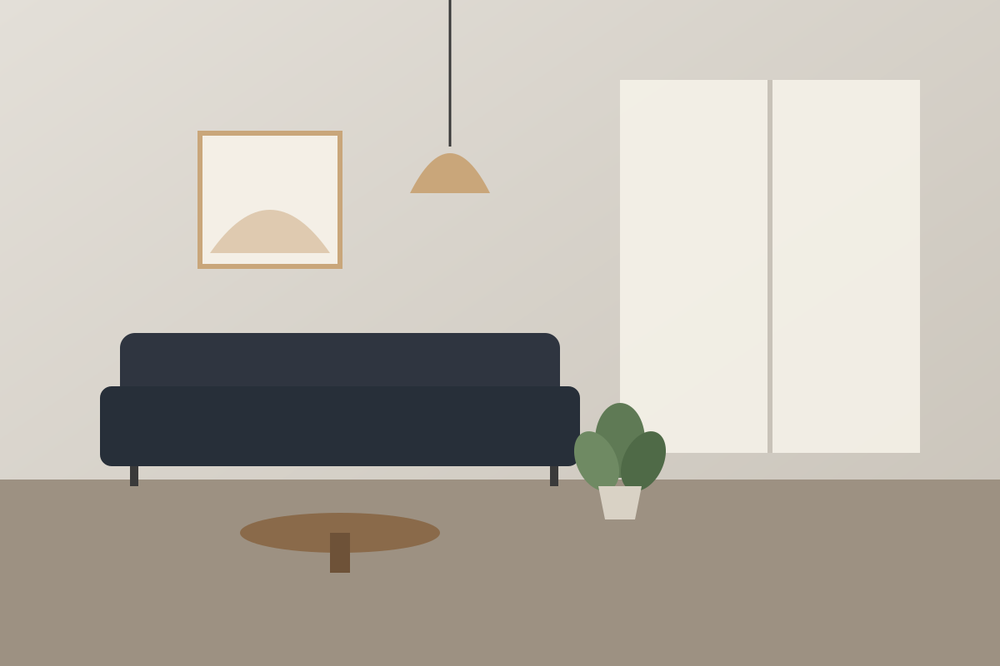
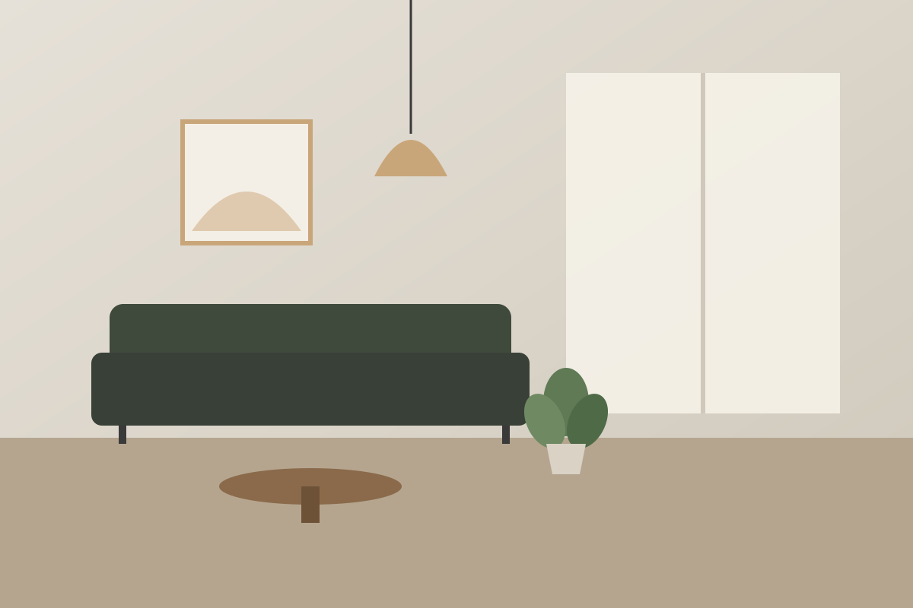

Moderno
Nace a mediados del siglo XX y apuesta por líneas rectas, superficies lisas y una paleta neutra con acentos de color. Todo tiene una función y nada sobra.
Características
- Colores neutros: blanco, gris, negro y madera.
- Muebles de líneas limpias y patas delgadas.
- Materiales como vidrio, metal y madera lisa.
Recomendado para
- Salas y comedores de departamentos urbanos.
- Espacios abiertos con buena luz natural.

